Machine Learning · MLEA_M · 2026-1
Exoplanet ML
Classifier.
Tabular vetting of NASA Kepler Objects of Interest: a reproducible, leakage-free machine-learning pipeline that decides whether a KOI is a genuine planet candidate or a false positive.
7Classifiers
9,564KOIs · 13 features
0.860Test F1
78Unit tests
Apache 2.0Open source
AuthorAndersson David
Sánchez Méndez@AnderssonProgramming
Sánchez Méndez@AnderssonProgramming
★ NASA Space Apps 2025 · Global Finalist
Master's in Data Science · ECI
01 · Problem/Why this matters
Problem & motivation 🪐
Ten thousand candidates. Most aren't planets.
- Kepler observed ~150,000 stars and produced ~10,000 KOIs via transit photometry.NASA Exoplanet Archive · cumulative KOI table
- Most KOIs are not real planets. Eclipsing binaries, instrumental noise, and stellar variability mimic transits.
- Manual vetting is slow. Each candidate currently demands expert review and follow-up time on scarce telescopes.
- Decision to support: "Is this candidate worth a follow-up observation?"
Problem type
Supervised binary classification
Predict $y \in \{\text{CANDIDATE},\ \text{FALSE POSITIVE}\}$ from 13 transit & stellar features.
Stars surveyed
150k
Kepler mission, 2009–2018
KOIs to triage
9,564
cumulative table
A faster, leakage-free triage means more real planets confirmed per night of follow-up time.
False-positive type · 1
Eclipsing binary stars
Two stars orbiting each other dim periodically in a way that looks identical to a planetary transit at first glance — the single largest contaminant.
False-positive type · 2
Instrumental & cosmic noise
Cosmic-ray hits, detector saturation, and pixel-level artefacts in Kepler's photometer create spurious dips with no astrophysical origin.
False-positive type · 3
Stellar variability
Starspots, flares, and pulsations modulate brightness on planet-like timescales — easy to confuse with a transiting body.
ECI Centauri · Sánchez · Pedraza02 / 20
02 · Data/Dataset card
Data 📊
NASA Kepler · 9,564 KOIs · 13 features after cleaning
| Field | Value |
|---|---|
| Source | NASA Exoplanet Archive — Cumulative KOI table (public domain) |
| Rows | 9,564 KOIs · 49 raw columns → 13 features after leakage removal |
| Target | koi_pdisposition ∈ {CANDIDATE, FALSE POSITIVE} |
| Class balance | 4,847 FALSE POS · 4,717 CAND — ≈ 51 / 49 % |
| Split | Stratified 72 / 8 / 20 (train / val / test) · seed = 42 |
Balanced classes let metrics speak honestly — SMOTE is available but not required.
Class distribution · n = 9,564
49
raw columns
13
features after cleaning
42
RANDOM_SEED
Transit photometry · 9 features
What the planet does to the star's light curve
| koi_period | Orbital period (days) | koi_prad | Planetary radius (R⊕) |
| koi_duration | Transit duration (hours) | koi_teq | Equilibrium temperature (K) |
| koi_depth | Transit depth (ppm) | koi_insol | Insolation flux (Earth units) |
| koi_impact | Sky-projected impact parameter | koi_model_snr | Transit-model signal-to-noise ratio |
| koi_time0bk | Transit epoch (BJD) |
Stellar host · 4 features
Properties of the star being observed
| koi_steff | Effective temperature (K) |
| koi_slogg | Surface gravity (log cgs) |
| koi_srad | Stellar radius (R☉) |
| koi_kepmag | Kepler-band magnitude |
NASA Exoplanet Archive · cumulative KOI03 / 20
02 · Data/Leakage trap
The trap nobody talks about ⚠️
Ten columns we drop on sight
Type 1 · Label leakage · 3 columns
koi_disposition
The label itself, in another disguise — perfect leakage.
koi_score
NASA's own confidence score for the label — a sibling target.
koi_comment
Free-text human notes — often state the label outright.
Type 2 · Target-defining flags · 4 columns
koi_fpflag_nt
"Not transit-like" — a heuristic that defines the label.
koi_fpflag_ss
"Stellar eclipse" flag — same family of leakage.
koi_fpflag_co
"Centroid offset" flag — pre-vetting decision baked in.
koi_fpflag_ec
"Ephemeris contamination" — likewise.
Type 3 · Identifier leakage · 3 columns
kepid · kepoi_name · kepler_name
Identifiers correlate with catalog order & vetting date — rank predicts disposition.
Take-away
Keeping these gives F1 ≈ 0.99 — and you've learned nothing.
A leakage-free pipeline is the difference between a model that generalizes and a model that memorizes vetting history. We enforce removal in src/constants.LEAKAGE_COLUMNS so the drop is reproducible and version-controlled.
With leakage
0.99
F1 — meaningless
Leakage-free
0.860
F1 — honest
How we enforce it
LEAKAGE_COLUMNS = [
'koi_disposition', 'koi_score',
'koi_fpflag_*', 'kepid',
'kepoi_name', 'kepler_name',
'koi_comment',
]
'koi_disposition', 'koi_score',
'koi_fpflag_*', 'kepid',
'kepoi_name', 'kepler_name',
'koi_comment',
]
One list, version-controlled — every notebook calls drop_leakage_columns() before anything else.
src/constants.py · LEAKAGE_COLUMNS04 / 20
03 · EDA/Distributions & correlations
Exploratory analysis · 1 / 2 🔭
Balanced classes. Heavy skews. Twin features.
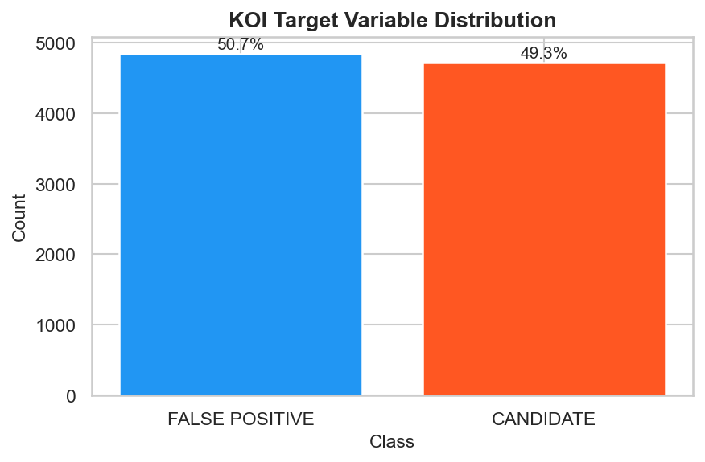
≈ 50 / 50 split — no class-imbalance compensation needed.
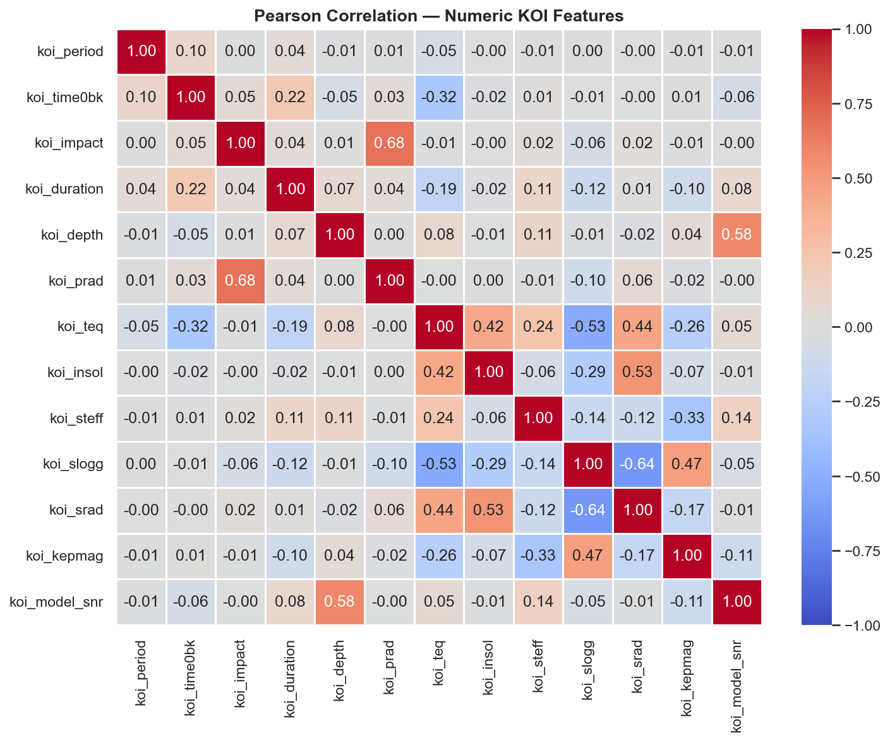
koi_teq ↔ koi_insol are near-collinear (r ≈ 1) — physically the same quantity.
Insight → tree-based models will be robust to the redundancy; linear models will need standard-scaled inputs to converge.
reports/figures · target_distribution · correlation_heatmap05 / 20
03 · EDA/PCA & K-Means
Exploratory analysis · 2 / 2 🌀
Partially separable in 2D — a non-linear model should win
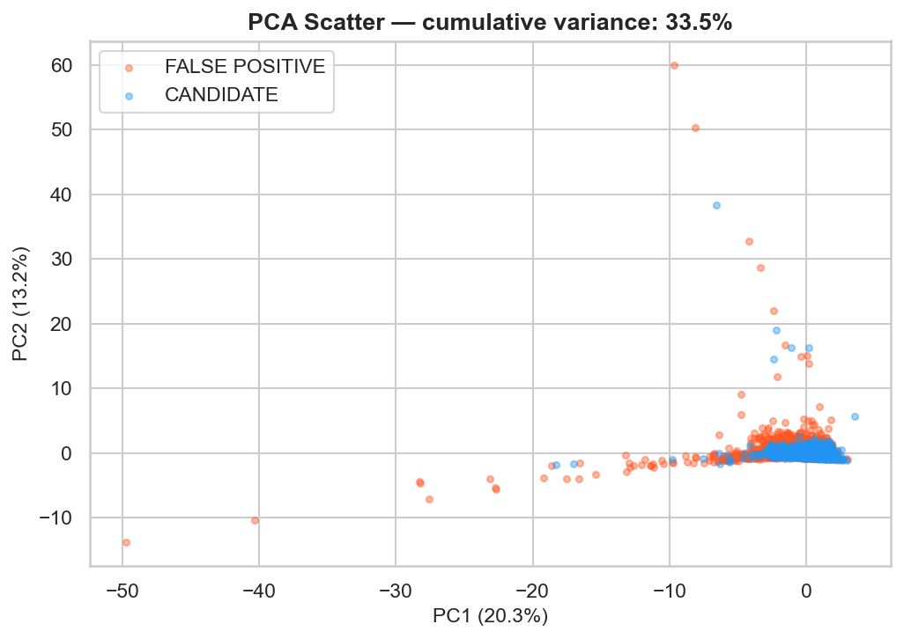
PC1–PC2 capture ~58 % of variance; classes overlap on a curved frontier.
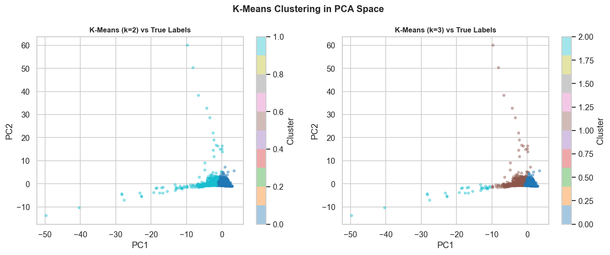
K-Means (k=2) only loosely tracks labels — confirming supervision is needed.
Take-away → linear baseline ≈ 0.78–0.79 F1; non-linear ensembles & kernels should close the gap.
reports/figures · pca_scatter · kmeans_pca06 / 20
04 · Pipeline/Preprocessing
Preprocessing pipeline ⚙️
One sklearn Pipeline, fit only on train
01
Raw CSV
9,564 × 49 from NASA archive
→
02
drop_leakage
remove 10 leaky cols
→
03
SimpleImputer
median, fit on train
→
04
StandardScaler
z-score, fit on train
→
05
SMOTE check
skipped · balanced
→
06
Stratified split
72 / 8 / 20
→
07
Classifier
7-model zoo
Why this order
Imputer and scaler live inside the same Pipeline
5-fold cross-validation refits the imputer + scaler on each training fold — so the model never sees test-set statistics. This is the difference between a defensible result and a hidden leak, and it is the single most overlooked source of silent overfitting in tabular ML.
✗Impute on the full dataset — test medians leak into the training median.
✗Scale before the split — z-score uses test mean & standard deviation.
✗Call transformers manually — CV folds can't re-fit them.
✓Wrap in Pipeline() — every CV fold refits both transformers from scratch.
Determinism
Every run is reproducible.
RANDOM_SEED = 42 threads through splits, SMOTE, RF / XGB / MLP, and GridSearchCV. One command → identical figures and metrics.
RANDOM_SEED = 42
train_test_split(..., random_state=RANDOM_SEED)
StratifiedKFold(..., random_state=RANDOM_SEED)
SMOTE(random_state=RANDOM_SEED)
RandomForestClassifier(random_state=RANDOM_SEED)
XGBClassifier(random_state=RANDOM_SEED)
MLPClassifier(random_state=RANDOM_SEED)
GridSearchCV(..., random_state=RANDOM_SEED)
5
CV folds (stratified)
42
RANDOM_SEED
72/8/20
train / val / test split
1
command to reproduce
src/preprocessing.py · src/models.py07 / 20
05 · Foundations/Equations
Mathematical foundations ∑
Three equations behind the zoo
Logistic regression · log-odds
$$\log\!\left(\frac{P(y{=}1\mid \mathbf{x})}{1-P(y{=}1\mid \mathbf{x})}\right)=\beta_0+\boldsymbol{\beta}^{\top}\mathbf{x}$$
Linear baseline. Coefficients $\boldsymbol{\beta}$ map each scaled feature to a log-odds contribution, providing direct interpretability.
Binary cross-entropy loss
$$\mathcal{L}=-\frac{1}{N}\sum_{i=1}^{N}\Big[y_i\log\hat{p}_i+(1-y_i)\log(1-\hat{p}_i)\Big]$$
Shared objective for logistic regression, the MLP, and XGBoost (logloss). Calibrates probabilities, not just labels.
SMOTE · synthetic minority sample
$$\mathbf{x}_{\text{new}}=\mathbf{x}_i+\lambda\,(\mathbf{x}_{nn}-\mathbf{x}_i),\quad \lambda\sim \mathcal{U}(0,1)$$
Considered, not used. Tested but classes are ≈ 51 / 49, so resampling brought no measurable lift.
All models in the zoo descend from one of these three ideas — linear margins, gradient-optimised probabilities, or local interpolation.
Gradient-optimised loss
Logistic Regression · MLP · XGBoost
Optimise binary cross-entropy directly. Predicted probabilities are calibrated as a side-effect.
Optimise binary cross-entropy directly. Predicted probabilities are calibrated as a side-effect.
Margin-based
SVM (RBF)
Maximises the margin in a lifted Hilbert space via hinge loss. Probabilities require Platt scaling.
Maximises the margin in a lifted Hilbert space via hinge loss. Probabilities require Platt scaling.
Tree / instance-based
Decision Tree · Random Forest · k-NN
No global loss — split with Gini / entropy or vote among local neighbours.
No global loss — split with Gini / entropy or vote among local neighbours.
Foundations covered in MLEA_M Sessions 02–0408 / 20
06 · Models/Seven-classifier zoo
Models 🧠
Seven classifiers · every inductive bias covered
| Algorithm | What it tests | Strength | Weakness |
|---|---|---|---|
| Logistic Regression | Linear separability of standard-scaled features | Interpretable coefficients, fast, well-calibrated | Cannot model curved boundaries |
| k-Nearest Neighbors | Local geometry in feature space (k = 5–21) | No training, captures local structure | Fragile to scale and high dimensions |
| Decision Tree (CART) | Single axis-aligned partition with gini/entropy | Highly interpretable, handles non-linearity | High variance, prone to overfitting |
| SVM · RBF kernel | Maximum-margin separation in lifted space | Strong on small/medium tabular data | Costly at scale, harder to interpret |
| Random Forest | Bagged decision trees over feature subsets | Reduces variance, robust to noise | Can underfit smooth decision regions |
| XGBoost ★ | Gradient-boosted trees with regularization | State of the art on tabular data | Many hyperparameters → needs tuning |
| MLP (128, 64) | Differentiable non-linear function approximator | Captures higher-order interactions | Hungry for data, needs scaling |
Each row picks a different inductive bias on purpose — no two models share the same way of carving up the feature space, so the comparison is honest end-to-end.
Family 1 · Linear & local
Logistic Regression · k-NN
No structural assumption about feature interactions. LR gives interpretable signed coefficients; k-NN captures purely local geometry. Together they set the baseline ensembles have to beat.
Family 2 · Trees & ensembles
Decision Tree · Random Forest · XGBoost
Axis-aligned partitions of the feature space, then averaged (bagging) or sequentially refined (boosting). Native handling of non-linear interactions — the state of the art on tabular data.
Family 3 · Margin & neural
SVM (RBF) · MLP
Continuous decision surfaces via the kernel trick (SVM) or learned hidden layers (MLP). Tests whether smooth non-linear boundaries can beat the tree-style staircase ones.
src/models.py · build_model_zoo()09 / 20
06 · Models/Architecture
Architecture in one picture 🏗️
Seven modules · 78 unit tests · one entry point
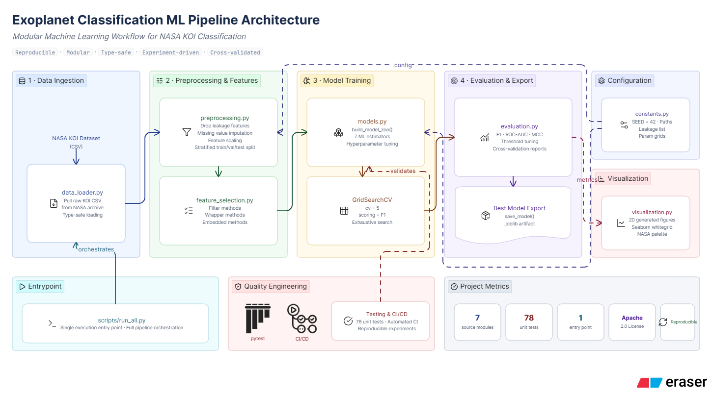
Read left to right: data ingestion → preprocessing & features → model training → evaluation & export. Every coloured box maps to one src/*.py module; the dashed swim-lanes group the four pipeline stages and the side panels gather configuration, visualisation, the single entry point, and the quality-engineering layer. scripts/run_all.py orchestrates the whole flow — figures, metrics and the serialised model artefact are all reproducible from one command.
github.com/AnderssonProgramming/exoplanet-ml-classifier10 / 20
06 · Models/Hyperparameter tuning
Hyperparameters 🎛️
GridSearchCV · 5-fold CV · scoring = F1
| Model | Grid searched | Best parameters |
|---|---|---|
| XGBoost ★ | n_estimators ∈ {200, 400}; max_depth ∈ {3, 5, 7}; lr ∈ {0.05, 0.1}; subsample ∈ {0.8, 1.0} | n=200, depth=7, lr=0.05, sub=0.8 |
| MLP | hidden ∈ {(64), (128,64), (128,64,32)}; α ∈ {1e-4, 1e-3} | hidden=(128,64), α=1e-4, adaptive LR |
| SVM | C ∈ {0.1, 1, 10}; kernel ∈ {linear, rbf}; γ ∈ {scale, 0.01, 0.1} | C=1, kernel=rbf, γ=scale |
| Random Forest | n ∈ {200, 400}; depth ∈ {None, 10, 20}; min_split ∈ {2, 5} | n=400, depth=None, min=2 |
| Decision Tree | criterion ∈ {gini, entropy}; depth ∈ {None, 5, 10, 20} | criterion=gini, depth=10 |
| k-NN | k ∈ {5, 11, 21}; weights ∈ {uniform, distance} | k=11, weights=distance |
| Logistic Reg. | C ∈ {0.1, 1, 10}; penalty=l2 | C=1, l2, lbfgs |
Why these two get the heaviest tuning
XGBoost & MLP have the widest expressive range
Tuning them is where the largest F1 swings live. Tree-ensemble defaults are already near-optimal for tabular data, while the kernel SVM and k-NN have small, well-charted grids.
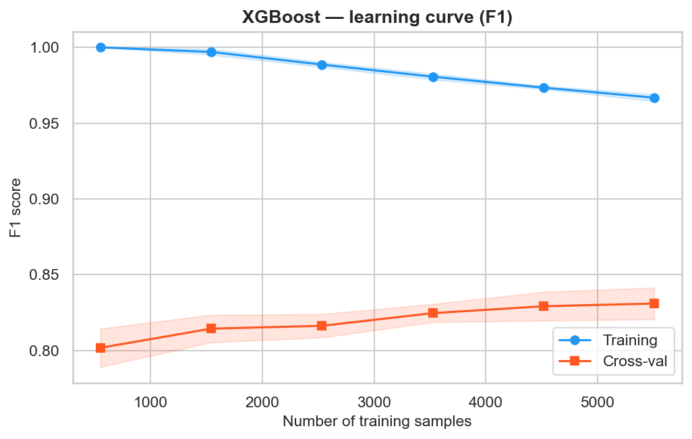
XGBoost learning curve — convergence reached; further data brings diminishing F1 returns.
How GridSearchCV runs for every model in the zoo
01
Build the grid
Cartesian product of the *_PARAM_GRID dict in src/constants.py
→
02
5-fold stratified CV
Imputer + scaler re-fit on each train fold — no leakage
→
03
Score on F1
Mean across folds · single scorer for moderate imbalance
→
04
Refit best
argmax over mean F1 · refit on full train · persist as .joblib
src/constants.py · *_PARAM_GRID11 / 20
07 · Evaluation/Metric choice
Why F1 & MCC — not accuracy 🎯
Recall matters: missed planets cost more than wasted follow-ups
F1 · harmonic mean of precision & recall
$$F_1=\dfrac{2\,P\,R}{P+R}=\dfrac{2\,\text{TP}}{2\,\text{TP}+\text{FP}+\text{FN}}$$
Balanced for moderate imbalance. Penalizes a model that wins on one side of the trade-off at the cost of the other.
MCC · Matthews correlation coefficient
$$\text{MCC}=\dfrac{\text{TP}\cdot\text{TN}-\text{FP}\cdot\text{FN}}{\sqrt{(\text{TP}+\text{FP})(\text{TP}+\text{FN})(\text{TN}+\text{FP})(\text{TN}+\text{FN})}}$$
Robust under any imbalance (Chicco & Jurman, 2020). Reports a single correlation in [−1, +1]; only high when all four confusion-matrix cells are good.
Accuracy can sit at 0.85 while one class is silently failing. F1 + MCC + ROC-AUC together close that blind spot.
Accuracy
Misleading under imbalance
Reports the fraction of correct labels. A 95 / 5 dataset gets 0.95 by predicting one class only.
F1 ★
Harmonic mean of P and R
Punishes precision-recall imbalance. Primary scoring metric for every GridSearchCV in this project.
MCC + ROC-AUC
Threshold-free sanity checks
MCC needs all four confusion-matrix cells to be good. ROC-AUC measures ranking quality at every threshold.
src/evaluation.py12 / 20
07 · Evaluation/Leaderboard
Test-set results · held-out 20 % 🏆
Tuned XGBoost wins across every metric
| Model | Accuracy | F1 | ROC-AUC | MCC |
|---|---|---|---|---|
| XGBoost (tuned)★ | 0.8604 | 0.8598 | 0.9361 | 0.7210 |
| Random Forest | 0.8495 | 0.8489 | 0.9271 | 0.6991 |
| SVM (RBF) | 0.8347 | 0.8341 | 0.9094 | 0.6695 |
| MLP (tuned) | 0.8202 | 0.8189 | 0.9006 | 0.6404 |
| Decision Tree (CART) | 0.7986 | 0.7984 | 0.7982 | 0.5972 |
| k-NN | 0.7862 | 0.7916 | 0.8568 | 0.5747 |
| Logistic Regression | 0.7784 | 0.7932 | 0.8341 | 0.5660 |
F1
0.860
+1.1 pp vs. Random Forest
ROC-AUC
0.936
+0.9 pp vs. Random Forest
MCC
0.721
+2.2 pp vs. Random Forest
seed = 42 · stratified 20 % test split13 / 20
07 · Evaluation/ROC & PR curves
Visual comparison 📈
XGBoost dominates the convex hull on both curves
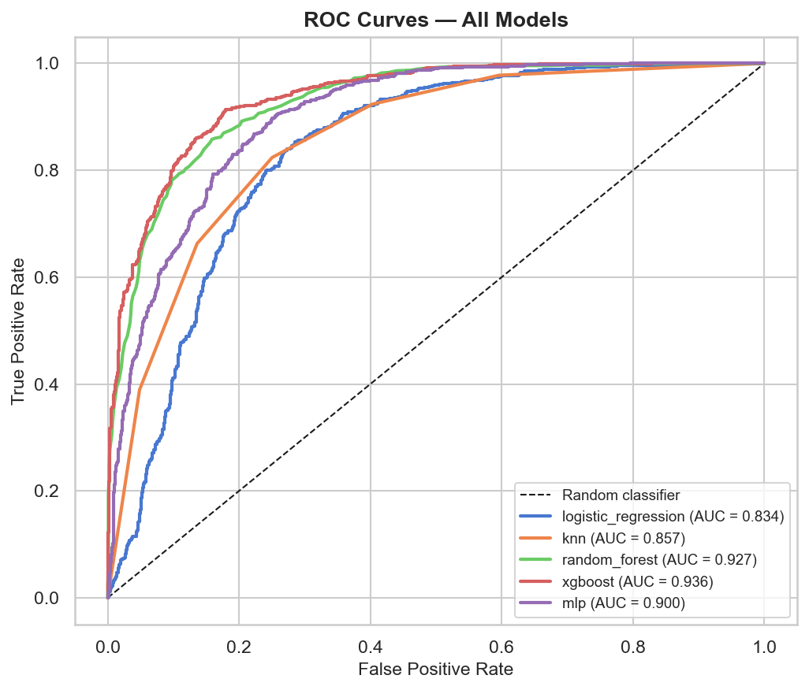
ROC — XGBoost & RF separate cleanly from the linear/local pack across all thresholds.
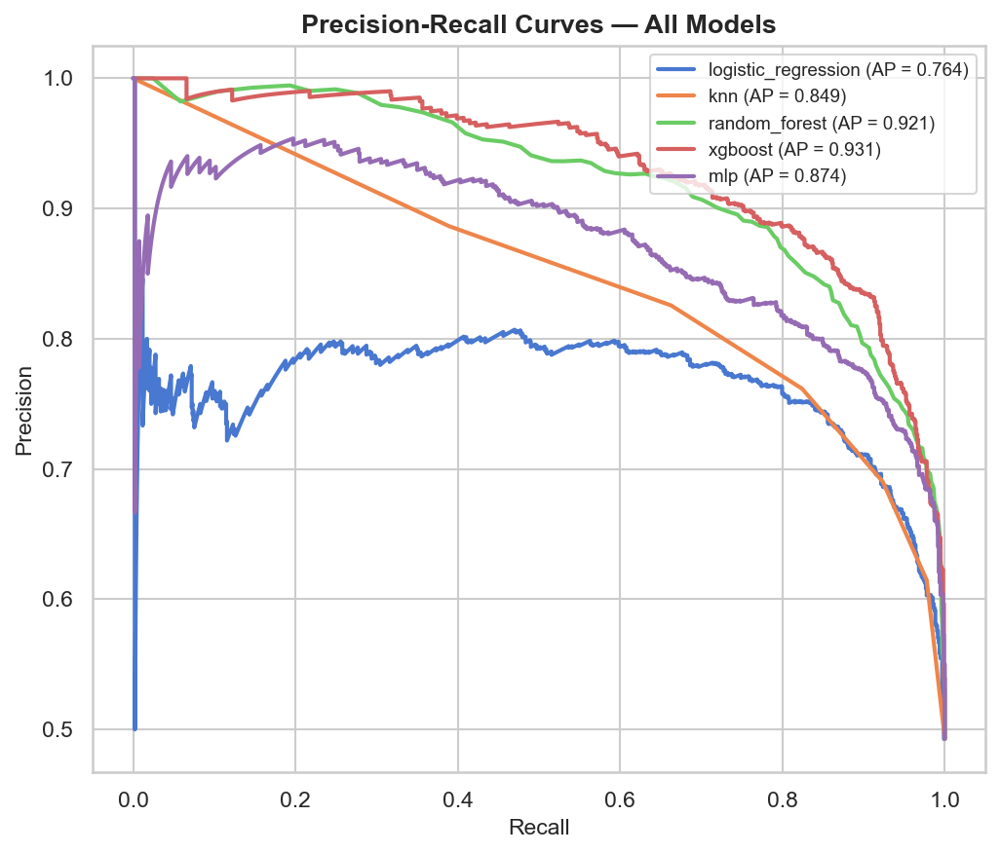
Precision-Recall — gap widens precisely in the high-recall regime we care about.
No operating threshold flips the ranking — XGBoost is the dominant choice at every false-positive rate.
reports/figures · overlay_roc_curves · overlay_pr_curves14 / 20
07 · Evaluation/Confusion & threshold
Confusion matrices & threshold tuning 🎚️
Lower threshold to 0.43 → +3 pp recall, almost free
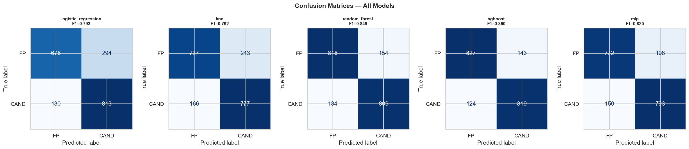
Errors are roughly symmetric — no model systematically over-calls either class.
| Threshold | F1 | Precision | Recall |
|---|---|---|---|
| 0.50 (default) | 0.860 | 0.851 | 0.869 |
| 0.43 (Youden's J) ★ | 0.862 | 0.829 | 0.899 |
| 0.35 (aggressive) | 0.851 | 0.788 | 0.926 |
Operating point
Youden's J ≈ 0.43
Trades ~2 pp precision for ~3 pp recall — net positive when the cost of a missed planet exceeds the cost of a wasted follow-up.
Youden's J · method
$\tau^{\star} = \mathrm{argmax}_\tau\,[\mathrm{TPR}(\tau) - \mathrm{FPR}(\tau)]$
Picks the ROC point farthest above the random-classifier diagonal — equal weight to sensitivity and specificity, no manual hyperparameter to set, fully data-driven on the validation predictions.
Why recall > precision here
A missed planet ≫ a wasted follow-up.
Confirming an exoplanet is a unique scientific discovery; one wasted telescope night is recoverable. The cost ratio is asymmetric, so the optimum operating point shifts down from the default 0.5 cut-off into the recall-favouring regime.
src/evaluation.py · tune_threshold(youden=True)15 / 20
07 · Evaluation/Feature importance
Interpretability 🔍
Top features are physically sensible
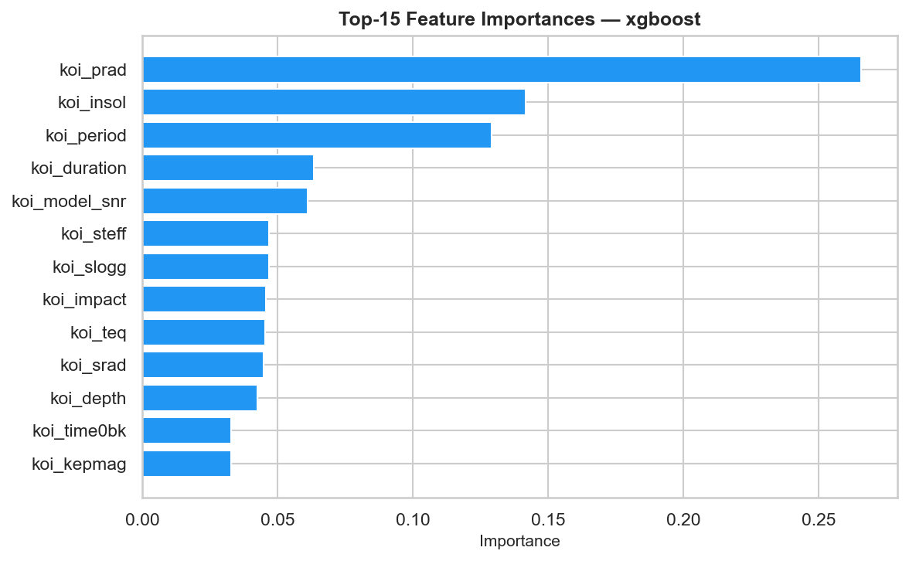
XGBoost gain — all 13 features ranked. Planetary radius, insolation and orbital period carry the model.
Top 3 features
1 · koi_prad — planetary radius (Earth radii)
2 · koi_insol — insolation flux (Earth units)
3 · koi_period — orbital period (days)
2 · koi_insol — insolation flux (Earth units)
3 · koi_period — orbital period (days)
Why these are physically sensible
koi_prad sets the discovery class — Earth-to-Neptune sized objects are real; many false positives back-out as star-sized "planets".
koi_insol is a composite of period, stellar Teff and stellar radius — it tells the model whether the geometry is astrophysically self-consistent.
koi_period distributions differ between real planets and eclipsing binaries (binaries cluster at very short, synchronous periods).
koi_insol is a composite of period, stellar Teff and stellar radius — it tells the model whether the geometry is astrophysically self-consistent.
koi_period distributions differ between real planets and eclipsing binaries (binaries cluster at very short, synchronous periods).
Cross-model agreement
Logistic-regression coefficients agree on direction with XGBoost gain — a robust sanity check that the model is not learning spurious correlations.
Exactly the columns a transit astronomer would inspect first — model behaviour matches domain intuition.
reports/figures · feature_importance_xgboost16 / 20
08 · Extensions/Sessions 04–06
Course extensions · Sessions 04 / 05 / 06 🧭
Every session in the course, applied to the same problem
Session 04 · Classifier zoo
SVM (RBF) + Decision Tree (CART)
Added so the zoo spans every algorithm in the Session 04 deck. SVM-RBF lands mid-table (F1 = 0.834); the single tree (F1 = 0.798) is the upper bound any single split-based model can reach without bagging.
Session 05 · Feature selection
Filter · Wrapper · Embedded
| Feature | F | W | E |
|---|---|---|---|
| koi_model_snr | ✓ | ✓ | ✓ |
| koi_prad | ✓ | ✓ | ✓ |
| koi_depth | ✓ | ✓ | ✓ |
| koi_duration | ✓ | ✓ | · |
| koi_period | · | ✓ | ✓ |
All three families agree on the top 3 — a strong robustness signal.
Session 06 · GMM · t-SNE · UMAP
Geometry of the test split
GMM with BIC/AIC selects k = 3 components (a sub-cluster inside CANDIDATE — likely short-period super-Earths). t-SNE and UMAP both expose curved manifolds — confirming why kernel and ensemble models beat linear ones.
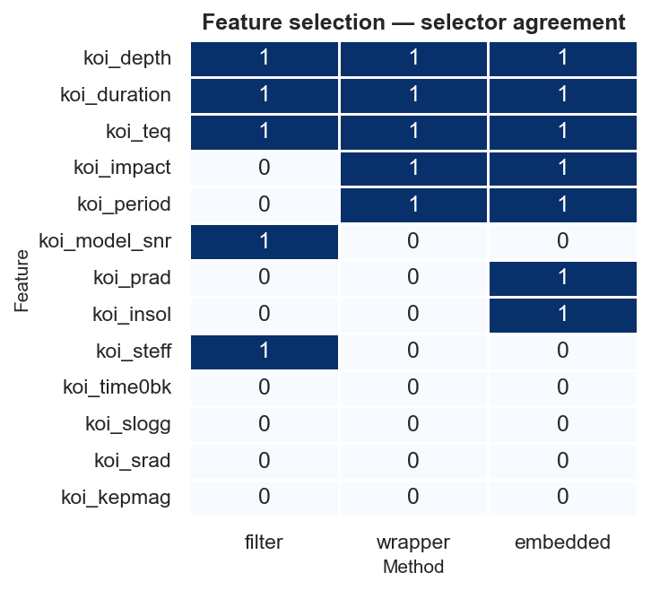
Filter · wrapper · embedded selectors — three methods, same top features.
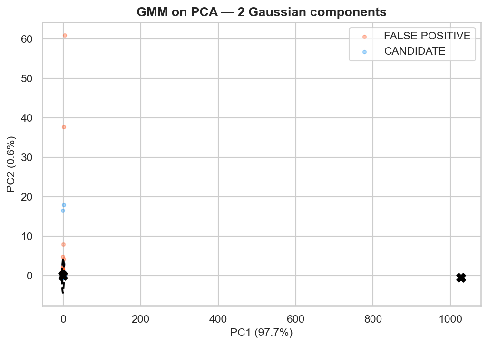
GMM components on PC1–PC2 — 3 ellipses, with one nested inside the CANDIDATE cloud.
src/feature_selection.py · notebooks/05_course_extensions.ipynb17 / 20
09 · Impact/Application
Application & impact 🌍
Three audiences, one open baseline
NASA archive operators
Faster triage of incoming KOIs — minutes instead of days. The model produces a calibrated probability + Youden-tuned label for every new entry in the cumulative table.
Transit astronomers
Higher-purity follow-up lists — less wasted telescope time per confirmed planet. The threshold can be re-tuned per observing program (recall-heavy vs precision-heavy).
Education & research
An open, fully reproducible baseline under Apache 2.0 — fork it, swap in a new model, re-run the same evaluation grid in a single command.
Triage time
< 1 s
per KOI · vs. days of manual review
Test F1
0.860
on the held-out 20 %
Recall @ Youden's J
0.899
+3 pp vs. default 0.5 cut-off
License
Apache 2.0
fork, modify, redistribute
Honest limitation
Tabular features only — no light-curve morphology.
A transit-shape CNN (ECI Centauri's astronet-cnn-v3) is the natural next stage; combining its prediction with this XGBoost classifier is on the roadmap.
What tabular features can't see
- Transit shape — V-shaped (eclipsing binary) vs U-shaped (real planet)
- Limb darkening — depth varies with where on the stellar disk the transit happens
- Secondary eclipses — visible at half the orbit for binaries, absent for planets
- Transit-timing variations — gravitational interactions with additional bodies
Production hand-off
From notebook to .joblib in one command.
joblib.load("best_xgboost.joblib") reproduces the winning pipeline byte-for-byte — preprocessing + classifier + Youden-tuned threshold — ready to drop into a FastAPI endpoint.
Minimal inference pattern
from joblib import load pipeline = load("best_xgboost.joblib") proba = pipeline.predict_proba(koi_df)[:, 1] labels = proba > 0.43 # Youden-tuned τ
< 1 ms
per-row inference
~2 MB
artefact size
3
runtime deps
github.com/AnderssonProgramming/exoplanet-ml-classifier18 / 20
10 · Conclusions/Next steps
Conclusions · next steps ✨
Tuned XGBoost wins. Leakage was the trap. Threshold tuning was free.
- Tuned XGBoost is the winner — F1 = 0.860 · ROC-AUC = 0.936 · MCC = 0.721 on the held-out 20 % test split.
- Removing label leakage was the single most important methodological decision.
- Threshold tuning via Youden's J gives a recall boost almost for free.
- Three feature-selection families agree on the top 3 features — physically interpretable.
F1
0.860
harmonic mean P·R
ROC-AUC
0.936
threshold-free rank
MCC
0.721
imbalance-robust
Open source · Apache 2.0
github.com/AnderssonProgramming/
exoplanet-ml-classifier
exoplanet-ml-classifier
7 modules · 78 unit tests · 1 entry point · 20 figures · deterministic seed 42.
Transferable lesson · 1
Inspect every feature for leakage
Keeping the ten leakage columns gave us a 0.99 F1 that meant nothing. On any tabular ML project, the first audit is column-by-column: does this feature exist before the prediction time?
Transferable lesson · 2
Wrap preprocessing in the Pipeline
Imputer and scaler refit on each CV fold — never on the full dataset. The single biggest source of silent overfitting in tabular ML disappears the moment you put everything inside sklearn.pipeline.Pipeline.
Transferable lesson · 3
Tune the threshold for asymmetric costs
The default 0.5 cut-off is almost never optimal. Whenever FN cost ≠ FP cost — and that's most real-world problems — Youden's J on the validation set is a one-line, hyperparameter-free win.
Next steps roadmap →
01
CNN ensemble
Stack with ECI Centauri's astronet-cnn-v3 on raw light curves
→
02
TabPFN evaluation
Foundation model on the same 13 features · zero-shot baseline
→
03
Probability calibration
Platt + isotonic on the validation split · for downstream ranking
→
04
Uncertainty estimates
Conformal prediction sets · triage-confidence flag per KOI
Final test split · n = 1,91319 / 20